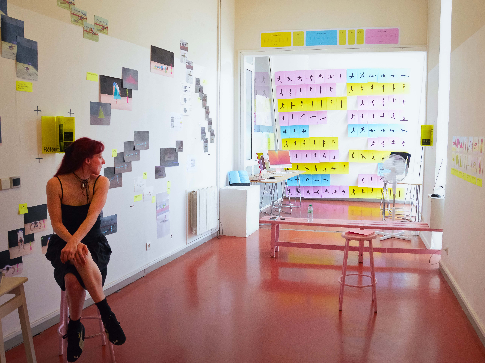
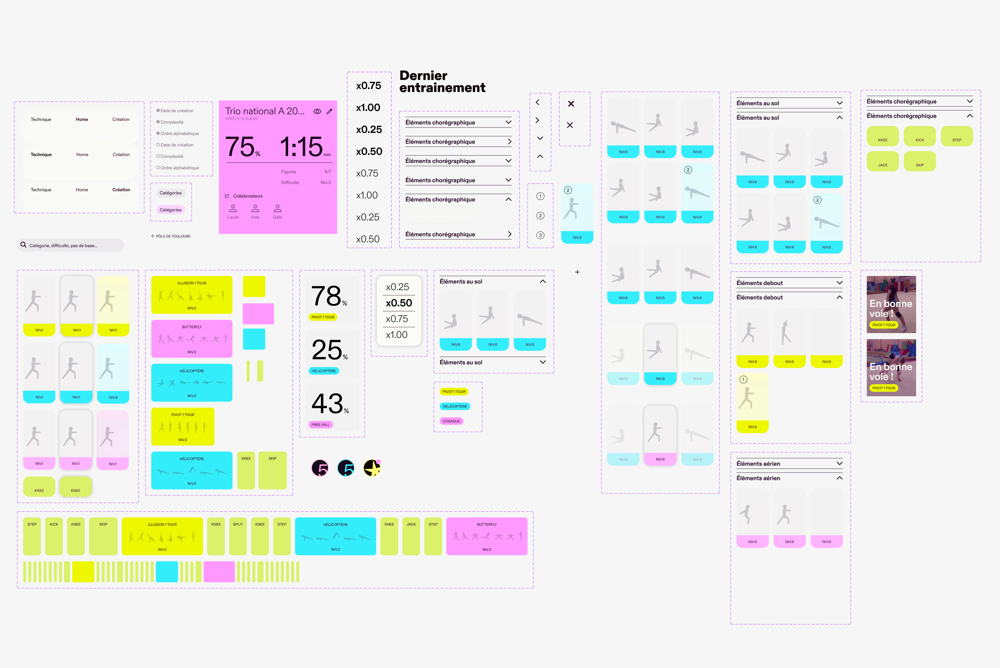
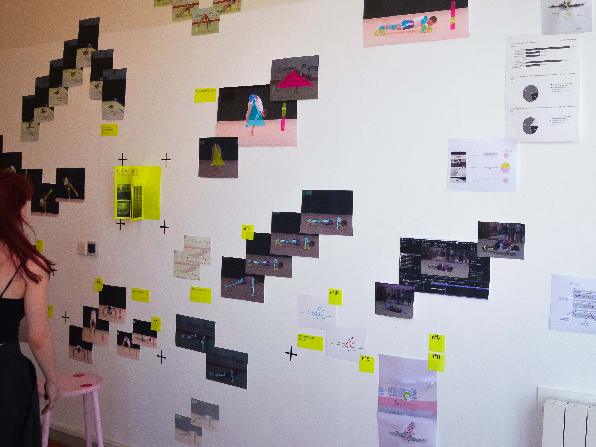

Aerolab donne les clés de lecture de la gymnastique aérobic, discipline sportive et artistique complexe, à travers des formes d'apprentissage actives fondées sur l'observation et l'expérimentation. Véritable support de création et d'apprentissage chorégraphique, il offre à la fois un espace de découverte de la discipline et de progression du geste technique, destiné à tous les pratiquants, du débutant au gymnaste confirmé. Un outil pour voir, comprendre et faire rayonner la gymnastique aérobic.
DESIGN UI, PLATEFORME INTERACTIVE, MOTION, PICTOGRAMME, SIGNES


